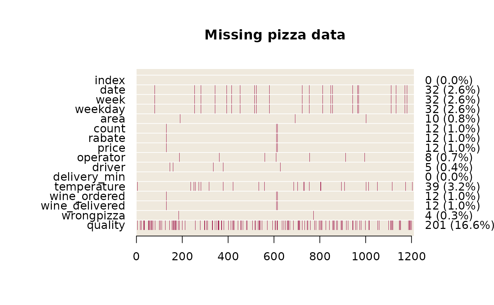

PlotMiss.RdTakes a data frame and displays the location of missing data. The missings can be clustered and be displayed together.
a data.frame to be analysed.
the colour of the missings.
the background colour of the plot.
logical, defining if the missings should be clustered. Default is FALSE.
the main title.
the dots are passed to plot.
A graphical display of the position of the missings can be help to detect dependencies or patterns within the missings.
if clust is set to TRUE, the new order will be returned invisibly.
PlotMiss(d.pizza, main="Missing pizza data")
